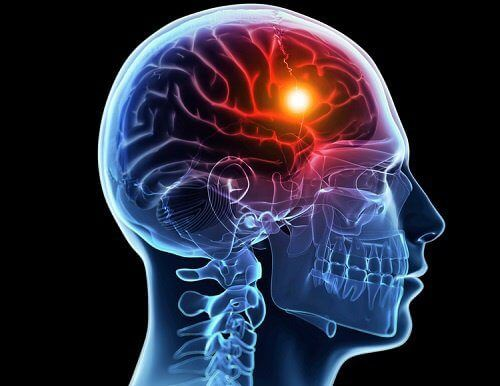
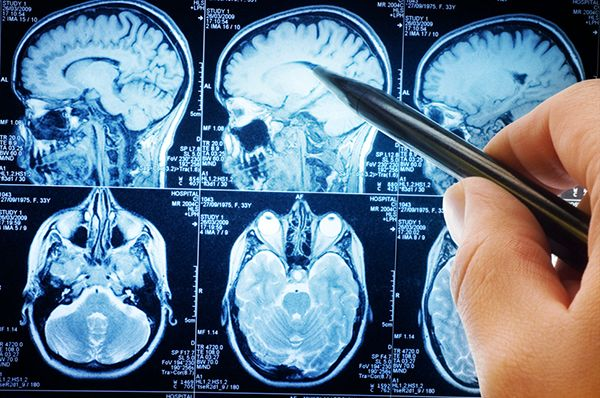

Artículos
-Esclerosis Multiple:
Los estudios epidemiológicos más recientes, indican que la prevalencia de la enfermedad ha aumentado en las últimas décadas tanto a nivel mundial como en nuestro país, principalmente a expensas de un mayor número de casos en mujeres con formas remitentes. Según la Sociedad Española de Neurología (SEN), la EM afecta a más de 50.000 personas en España, de las cuales un 70% corresponden a personas entre 20 y 40 años.
Dicho incremento, podría estar relacionado con las mejoras en las condiciones sanitarias y capacidad diagnóstica, lo que llevaría consigo un diagnóstico más precoz y la posibilidad de intervenir en la progresión de la discapacidad con fármacos cada vez más eficaces a edades más tempranas.
La EM es una enfermedad muy variable y heterogénea tanto en su forma de presentación al inicio, como en su evolución clínica. Algunos síntomas como los trastornos sensitivos, alteraciones visuales y dificultad para coordinar movimientos, son formas frecuentes de presentación de la enfermedad, que en un 80% de los casos cursa en forma de brotes. Sin embargo, sabemos que con el paso de los años hasta un 40% de los pacientes afectos de EM pueden desarrollar una forma progresiva de la enfermedad.
Por otro lado, algunos estudios que han valorado los efectos del tratamiento sobre las exacerbaciones clínicas y la discapacidad física determinados por la escala ampliada del estado de discapacidad de Kurtzke (EDSS), utilizados ampliamente en la práctica clínica diaria, han demostrado una sensibilidad limitada en el ámbito de las formas progresivas de la enfermedad.
Teniendo en cuenta todos estos datos, ¿estamos en disposición de afirmar que la EM crea una discapacidad permanente?
Si entendemos como discapacidad permanente a una situación en la que los pacientes afectados por una patología, tras un tratamiento prescrito durante un tiempo determinado, presentan reducciones funcionales significativas previsiblemente definitivas, la respuesta sería sí. Debemos tener en cuenta que 3 de cada 4 pacientes con EM tienen en la actualidad algún tipo de discapacidad reconocida. De ellos, casi la mitad precisan de apoyos para la deambulación o ayuda para la realización de actividades de la vida diaria.
Sin embargo, en las dos últimas décadas, hemos asistido a un gran número de avances terapéuticos, con fármacos dirigidos a modificar la evolución de la enfermedad. Alguno de ellos, han mostrado su eficacia en síntomas que hasta hace relativamente poco tiempo habían suscitado menos interés, como la atrofia cerebral y el deterioro cognitivo asociado a la enfermedad. Otros síntomas de la esfera emocional como la depresión o la ansiedad, en muchas ocasiones son causantes de una merma en la calidad de vida de estos pacientes.
Los avances farmacológicos y el tratamiento multidisciplinar desde fases más tempranas de la enfermedad, nos permiten en la actualidad realizar un tratamiento más personalizado adaptando el fármaco al perfil de cada paciente. El desarrollo de nuevas terapias ha permitido que un porcentaje significativo de pacientes con EM puedan tener una situación funcional más favorable y una mejor calidad de vida tras 15 años desde el diagnóstico de la enfermedad.
-Vitamina D y EM (Esclerosis Multiple)
En concreto en la esclerosis múltiple, numerosos estudios epidemiológicos han encontrado una relación entre los niveles de esta vitamina y la probabilidad de padecer esta enfermedad, así como un mayor riesgo de brotes y de una peor evolución clínica. De aquí el gran interés que se ha generado alrededor de este factor ambiental, relacionado a su vez con la exposición solar y la latitud, que podría ser un factor modificable e incluso una alternativa terapéutica natural de forma combinada con el resto de los tratamientos farmacológicos aprobados 2,3.
¿Qué tipos de vitamina D existen?
Existen dos formas de vitamina D: la vitamina D3 o colecalciferol, producida en la piel de los animales gracias a la acción del sol, y la vitamina D2 o ergocalciferol obtenida en plantas y levaduras también gracias al efecto solar.
La 25(OH)D es el parámetro representativo de todo el almacén de vitamina D en el organismo y es el valor utilizado en la práctica clínica. Por consenso se ha establecido que los niveles óptimos de vitamina D serían entre 50-100 nmol/L (20-40 ng/ml), con niveles subóptimos de 25 a 50 nmol/L y deficitarios por debajo de 25 nmol/L. Estas cifras están basados en estudios centrados en el metabolismo óseo, pero existen menos datos sobre las concentraciones recomendables para el adecuado desarrollo de sus otras funciones4.
En el ser humano existen varias formas de obtener esta vitamina, incluyendo el aporte exterior a partir de ciertos alimentos (pescados grasos como el salmón o el atún, hígado de ternera, yema de huevo y hongos), pero la mayoría, el 90%, proviene del metabolismo endógeno a partir del sol. En situaciones deficitarias se puede administrar como suplemento. Según la organización mundial de la salud, se recomiendan dosis diarias de, al menos, entre 400-800 unidades internacionales (UI)5.
Tratamiento con vitamina D
Pero, a pesar de la clara relación estadística entre los niveles de vitamina D y esclerosis múltiple, existen menos datos sobre su verdadera utilidad y beneficio clínico. En este sentido existen datos contradictorios. Por un lado, disponemos de numerosos trabajos epidemiológicos donde se ha comprobado un efecto directo beneficioso del suplemento de esta vitamina, pero la mayoría son estudios de casos y controles, con una duración corta y con posibles sesgos que dificultan su confirmación definitiva. Y, por otro lado, los últimos ensayos clínicos y revisiones sistemáticas de estas investigaciones no han conseguido constatar y reproducir los resultados positivos de los trabajos previos. Por este motivo sigue existiendo controversia sobre la mejor recomendación de tratamiento y regulación de los niveles de vitamina D en esta enfermedad6,7. No obstante, dado su beneficio global sobre la salud, y la ausencia de efectos secundarios, siempre que no superemos dosis tóxicas, la mayoría de los expertos recomiendan el tratamiento con suplementos de vitamina D para alcanzar aquellas cifras óptimas de 50-100 nmol/L, que se pueden cubrir con pautas diarias, semanales o mensuales con cualquiera de los preparados comerciales de vitamina D8.
-Epidemiología del espectro de neuromielitis óptica. Nuevos y viejos desafíos
La presente revisión epidemiológica sobre el espectro de neuromielitis óptica (NMOSD) se focaliza en la descripción metodológica de los estudios realizados bajo los criterios del NMOSD de 2015, en la descripción de estudios realizados en España y Latinoamérica, así como en los factores relacionados con el pronóstico de la enfermedad.
Desarrollo.
La metodología utilizada en los estudios varía fundamentalmente en la aplicación de diferentes criterios diagnósticos, fuentes de registros, técnicas de detección de anticuerpos y métodos de estandarización. Sin embargo, en términos generales, el NMOSD tiene una distribución mundial con una mayor incidencia/prevalencia en las mujeres que en los hombres, y en los países asiáticos y afroamericanos que en los países occidentales. La frecuencia aumenta de manera paralela a la edad, con un pico de incidencia/prevalencia en el rango entre 40 y 59 años. La población latinoamericana presenta unas características epidemiológicas particulares ligadas a su mezcla racial y genética. Finalmente, variables epidemiológicas, como la raza negra, una mayor edad en el inicio y el sexo femenino, se asocian a un peor pronóstico funcional.
Conclusiones.
Los datos epidemiológicos del NMOSD varían entre los diferentes estudios, debido, en gran parte, a discrepancias en los diseños metodológicos. Aunque son escasos los estudios latinoamericanos, los hallazgos descritos se asocian a su mezcla étnica. La homogeneización de criterios, utilización de técnicas diagnósticas y métodos de estandarización similares es de fundamental aplicación para el correcto estudio de la epidemiología del NMOSD.
-La hipertrigliceridemia se relaciona con el riesgo vascular después de un accidente cerebrovascular

En los pacientes con accidente cerebrovascular de origen aterotrombótico, la hipertrigliceridemia se asocia con un riesgo vascular residual, incluso en quienes reciben tratamiento con estatinas, según un estudio publicado en línea el 16 de marzo en Neurology.
El Dr. Takao Hoshino, Ph.D., del Tokyo Women’s Medical University Hospital, y colaboradores examinaron la contribución de la hipertrigliceridemia al riesgo vascular residual en pacientes con accidente cerebrovascular aterotrombótico. Se realizó un seguimiento de un total de 870 pacientes con accidente cerebrovascular isquémico agudo o accidente isquémico transitorio durante un año.
Los investigadores hallaron que el 24,9 % de los participantes tenía hipertrigliceridemia. Se observó una asociación significativa para niveles altos de triglicéridos con una mayor prevalencia de estenosis de las arterias intracraneales, especialmente en la circulación anterior, en lugar de estenosis de las arterias extracraneales. El riesgo de eventos adversos cardiovasculares mayores aumentó en los pacientes con hipertrigliceridemia frente a los pacientes sin hipertrigliceridemia (tasa anual: 20,9 % frente a 9,7 %), incluso después del ajuste por posibles variables de confusión, incluido el nivel inicial del colesterol de las lipoproteínas de baja densidad y el uso de estatinas al inicio (cociente de riesgos instantáneos ajustado, 2,46). El aumento del riesgo de eventos vasculares en los pacientes con hipertrigliceridemia frente a los pacientes sin hipertrigliceridemia se observó en los pacientes con accidente cerebrovascular de origen aterotrombótico (tasa anual: 35,1 % frente a 14,2 %), en los pacientes con estenosis significativa de las arterias intracraneales (tasa anual: 29,9 % frente a 14,7 %) y en los pacientes con estenosis significativa de las arterias carótidas extracraneales (tasa anual: 23,0 % frente a 9,4 %). En los pacientes con accidente cerebrovascular cardioembólico, la hipertrigliceridemia no predijo eventos vasculares recurrentes.
“Se necesita más investigación, pero para las personas que han tenido un accidente cerebrovascular aterotrombótico, los niveles de triglicéridos pueden emerger como objetivo clave para prevenir futuros accidentes cerebrovasculares y otros problemas cardiovasculares”, dijo Hoshino en un comunicado.

-Estimulación cerebral profunda en la enfermedad de Parkinson: análisis de la anisotropía fraccional cerebral en pacientes intervenidos mediante estimulación cerebral profunda.
La estimulación cerebral profunda (ECP) del núcleo subtalámico actualmente es una opción terapéutica basada en la evidencia para los síntomas motores en pacientes con enfermedad de Parkinson (EP), aunque otros síntomas no motores pueden verse afectados por la estimulación.
Objetivo.
Nuestro objetivo es evaluar los cambios globales en la conectividad de la red estructural a gran escala en pacientes con EP que han obtenido un beneficio de la ECP subtalámica.
Sujetos y métodos.
Estudio retrospectivo de 31 sujetos: siete pacientes con EP con ECP subtalámica (grupo A), 12 pacientes con EP no operados de la misma edad y sexo (B) y 12 controles sanos (C). Todos los sujetos se habían sometido a una resonancia magnética cerebral de 1,5 T con imagen del tensor de la difusión. Las imágenes DICOM se procesaron con el software FSL5.0 y la herramienta estadística espacial basada en el tracto.
Resultados.
El grupo de estudio estuvo compuesto por 23 hombres y ocho mujeres. No se encontraron diferencias estadísticamente significativas en edad, sexo, puntuación en la escala de Hoehn y Yahr y seguimiento medio entre el grupo A y B, y en edad y sexo entre los grupos A y C. El análisis estadístico reveló diferencias en la anisotropía fraccional de los diferentes grupos en ciertas áreas: tracto corticoespinal bilateral, radiaciones talámicas anteriores, fascículo frontooccipital bilateral, ambos fascículos longitudinales superiores y fascículo longitudinal inferior izquierdo.
Conclusiones.
En nuestra serie, los pacientes con EP tratados con ECP subtalámica bilateral mostraron una anisotropía fraccional significativamente mayor en áreas extensas de la sustancia blanca cerebral, lo que sugiere que la neuromodulación produce cambios de conectividad en diferentes redes neuronales.
Introducción
La enfermedad de Parkinson (EP) es uno de los síndromes neurodegenerativos más comunes y causa una variedad de síntomas motores y no motores [1,2]. Los estudios de imagen y neurofisiológicos en pacientes con EP han demostrado alteraciones en el volumen, las propiedades de difusión y la función en diferentes estructuras corticales y subcorticales, lo que sugiere que la enfermedad puede surgir de la disfunción de diferentes componentes de la red [2].
La estimulación cerebral profunda (ECP) es una terapia altamente efectiva para la EP; restaura eficazmente la función motora, reduce la dosis de levodopa y las complicaciones motoras, y mejora la calidad de vida de los pacientes con EP [3]. Una pregunta importante, pero sin respuesta, es cómo la ECP del núcleo subtalámico modula la actividad cerebral, lo que lleva a sus efectos terapéuticos significativos en la EP. Inicialmente se propuso una teoría basada en una vía estriadotalamocortical anormal, en la que la ECP inhibiría el núcleo subtalámico, restableciendo el equilibrio normal de estos circuitos [3,4]. Posteriormente, algunos estudios que utilizan técnicas de neuroimagen funcional han intentado analizar los efectos de la ECP del núcleo subtalámico en muchas regiones corticales y subcorticales diferentes [5-9]; sin embargo, son muy escasos y llevaron a resultados contradictorios. Hasta donde sabemos, no hay estudios de imagen del tensor de difusión (DTI) que evalúen los efectos postoperatorios de la ECP en la totalidad de la conectividad cerebral. El objetivo de nuestro estudio es analizar los cambios en la conectividad en pacientes con EP tras ECP, comparando sus parámetros de DTI postoperatorios con los de DTI en pacientes no operados.